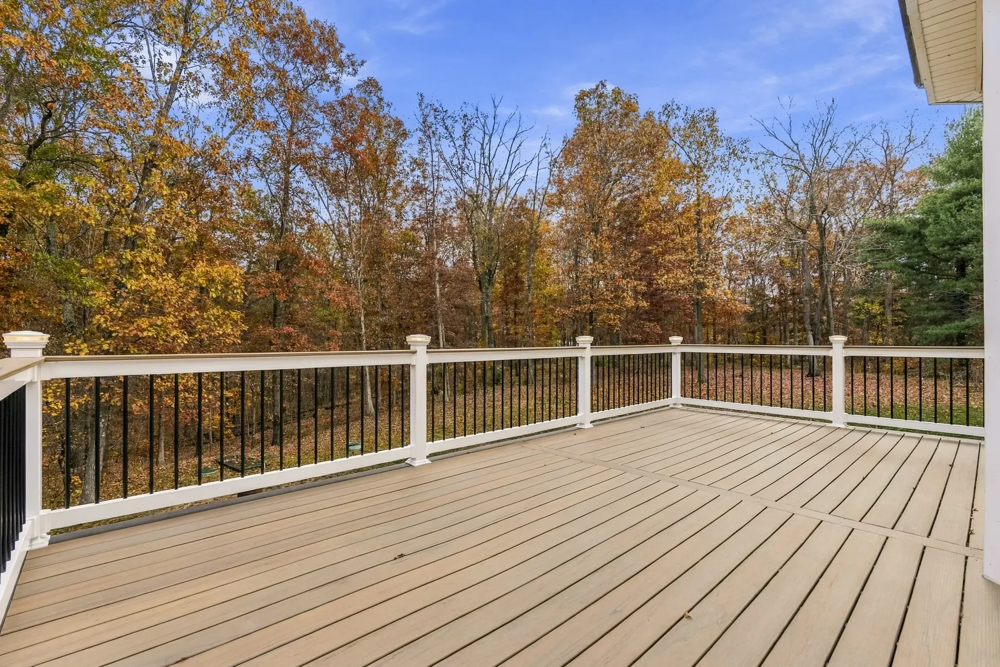
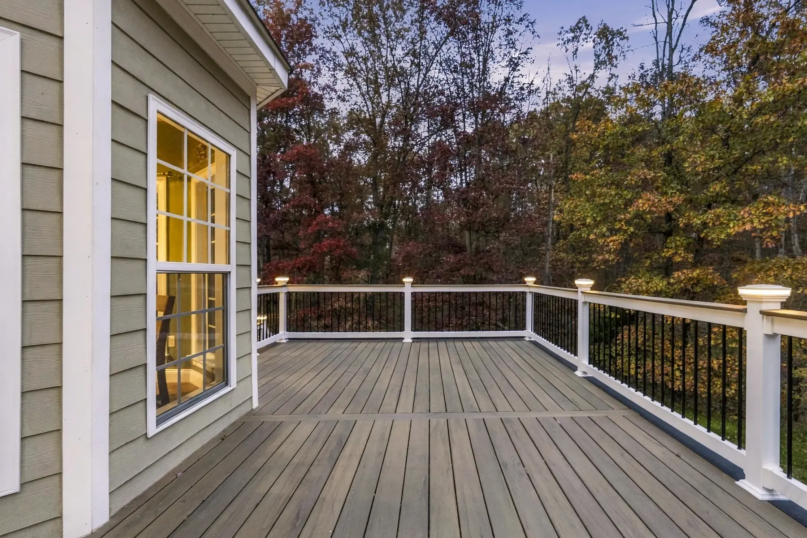
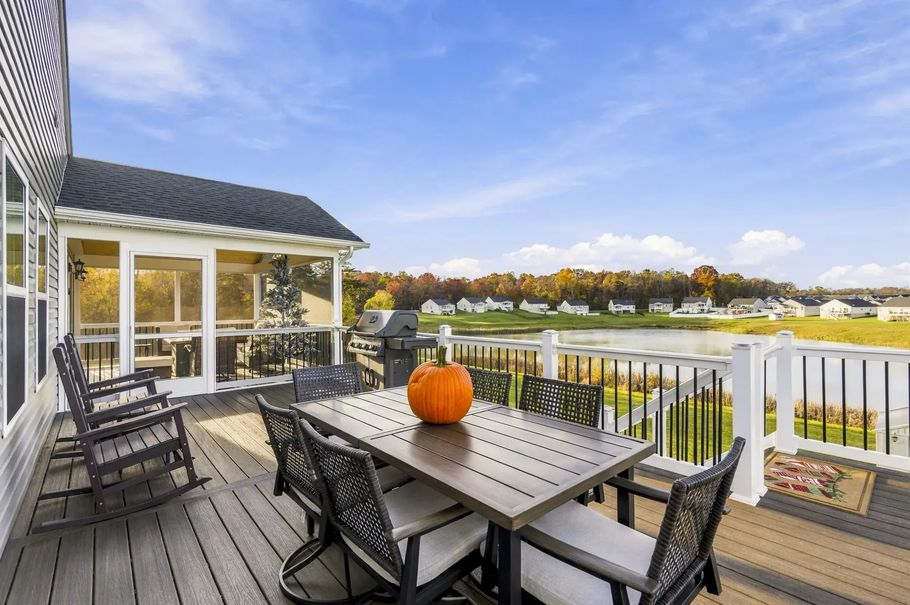
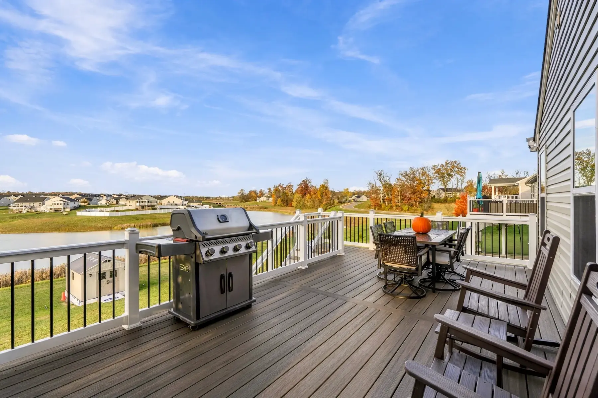
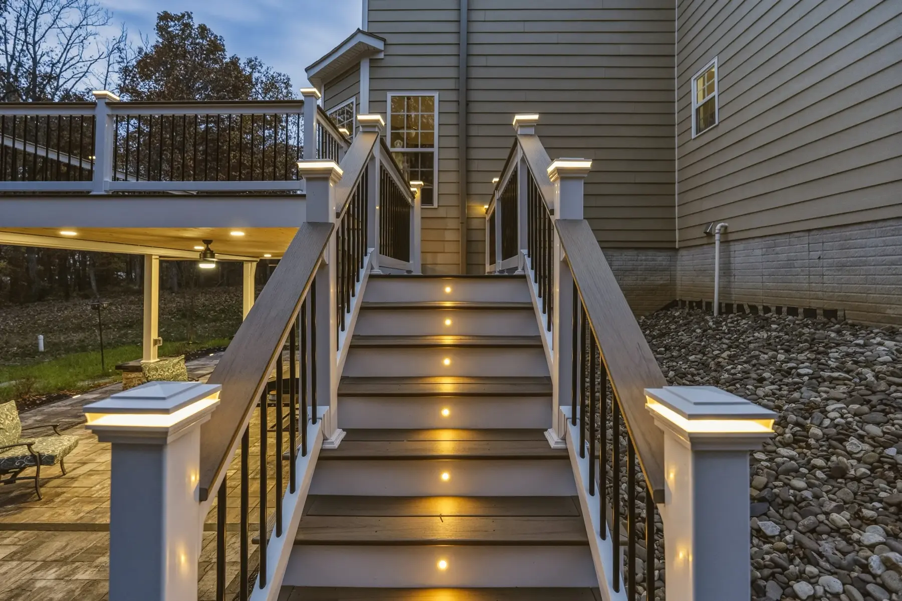
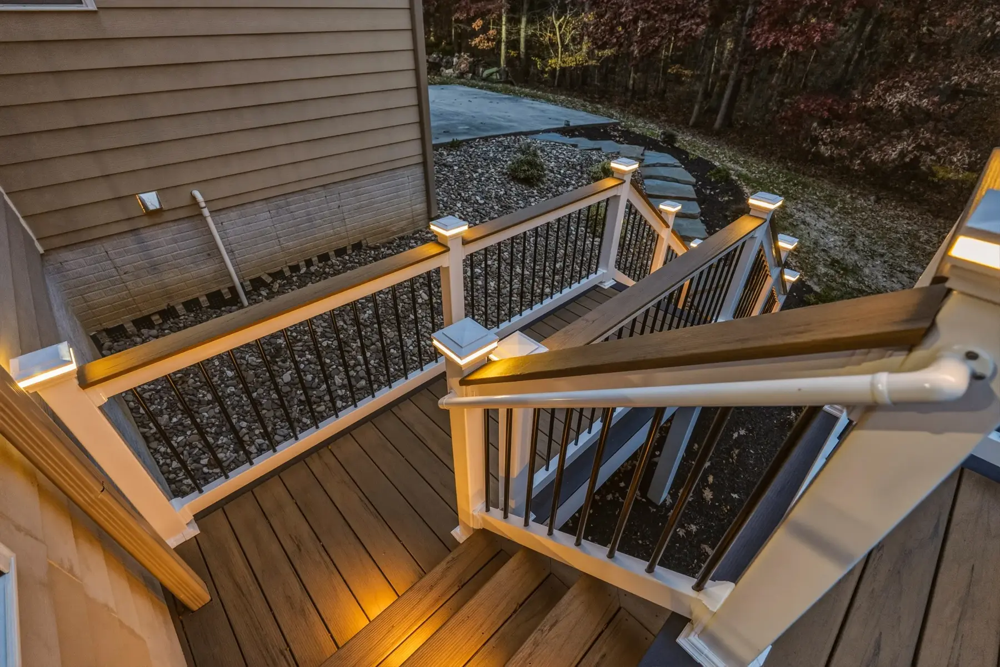
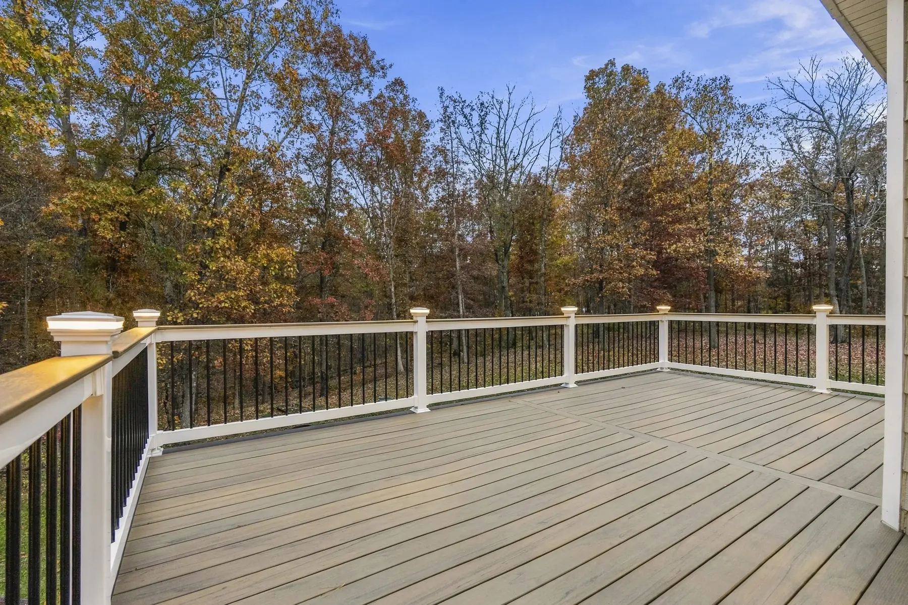
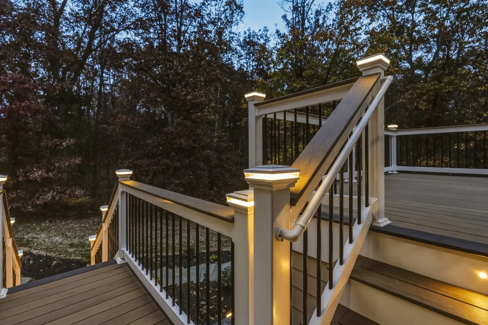
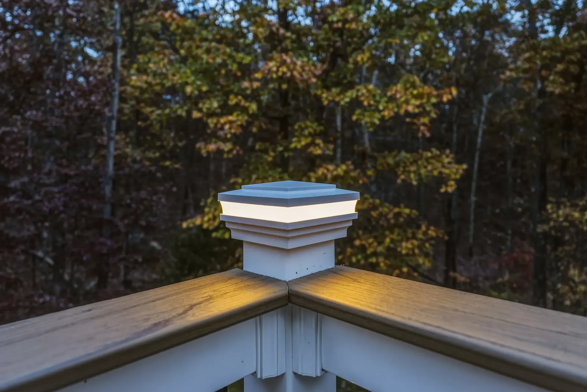
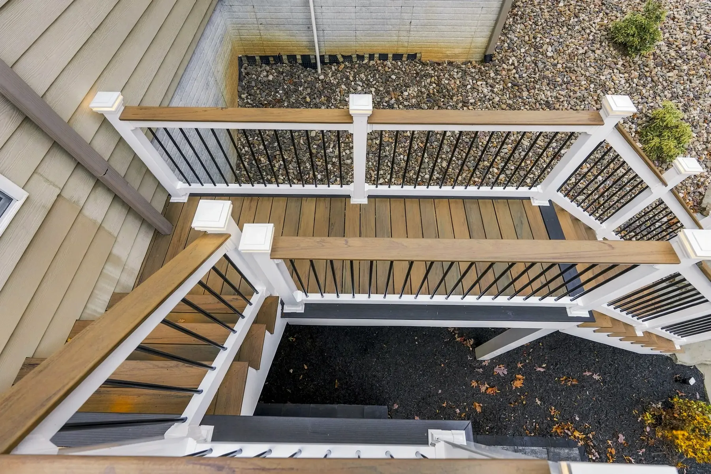

Custom Deck Construction in Winchester, VA
We design and build custom decks, from composite and wood decking to stairs, railings and lighting, creating outdoor spaces that last longer.
- 01Composite
- 02Wood
- 03Railings
- 04Stairs
- 05Lighting
Winchester, VA’s Trusted Deck Design and Build Specialists
Custom Deck Construction Services in Winchester VA
Potros Construction builds high-quality custom decks in Winchester VA designed to expand your outdoor living space with comfort, style, and durability.
Whether you’re looking for a relaxing backyard retreat, an entertainment-ready deck, or a beautiful extension of your home, we design and build each project to match your needs. Our team works closely with you to plan the layout, size, materials, and overall look of your deck so it blends seamlessly with your home’s architecture. We use sturdy, weather-resistant materials like pressure-treated lumber, PVC decking, and modern composite boards to ensure long-lasting performance. Every deck is built on a solid foundation with professional framing, proper support, and structural integrity. With exceptional craftsmanship and attention to detail, Potros Construction delivers a deck that enhances your home’s beauty while providing a functional space for outdoor enjoyment.


01Materials
Composite and Wood Decking Options for Every Home
Choosing the right decking material is essential for both the look and longevity of your deck. We offer a full range of wood and composite decking options for homeowners in Winchester VA.
Composite decking provides low maintenance, excellent durability, and long-term resistance to fading, moisture, and rot—making it a popular choice for busy families. Wood decking, including pressure-treated lumber and cedar, offers natural beauty and a traditional look. Our team helps you compare textures, colors, benefits, and maintenance needs so you can select the perfect fit for your home. No matter which option you choose, our installation techniques ensure strong structural support and a smooth, polished finish. The result is a beautiful deck built to withstand everyday use and seasonal weather for years to come.
- Composite decking: low maintenance and long lasting
- Wood decking, including pressure-treated lumber
- Options for every home and budget


02Design
Deck Designs for Outdoor Living, Dining, and Entertaining
Your deck should be a reflection of your lifestyle, and we design spaces that support everything from family gatherings to quiet relaxation. Potros Construction creates functional deck layouts that include lounge areas, dining zones, grilling stations, and optional features such as shade structures, pergolas, or built-in seating.
We consider how people move through the space, how furniture will be arranged, and how the deck connects to your yard or home. Whether you want a single-level deck or a multi-tiered design with separate zones, we bring your outdoor living vision to life. Our goal is to build a deck that feels comfortable, spacious, and perfect for entertaining. With thoughtful planning and professional execution, your backyard becomes a true outdoor oasis.
- Lounge areas, dining zones and grilling stations
- Shade structures, pergolas and built-in seating
- Layouts planned around how people move through the space


03Built to last
Built to Last With Strong, Weather-Resistant Construction
A high-quality deck starts with strong construction. Potros Construction builds decks in Winchester VA using reinforced framing, corrosion-resistant fasteners, and weather-resistant materials engineered to stand up to the elements.
We follow strict building codes and best practices to ensure every deck is safe, secure, and long-lasting. Our team prepares the foundation with proper footings and support posts, ensuring excellent stability. We also install boards with appropriate spacing for drainage and airflow, helping prevent warping, splitting, and moisture damage. With our attention to structural strength and weather protection, your deck will maintain its beauty and function for many years. Long-term durability is a core focus in every build we complete.
- Reinforced framing and proper footings
- Corrosion-resistant fasteners
- Built to code and weather resistant
Our work
Deck projects
Composite and wood decks, stairs and railings from recent builds around Winchester.





Why it matters
Add Value and Beauty to Your Outdoor Space
Add value and beauty to your outdoor space with expertly crafted features designed to elevate both style and functionality. Whether you’re looking to build a custom patio, upgrade your deck, install a fire feature, or enhance your landscaping, our team delivers high-quality workmanship that transforms your yard into a place you’ll love. A thoughtfully designed outdoor space not only improves your home’s curb appeal but also creates a welcoming environment for relaxation and entertainment. We use durable materials and proven construction methods to ensure every project stands the test of time. Serving homeowners throughout Winchester, VA, we focus on personalized design, clear communication, and reliable service from start to finish. Let us help you create an outdoor space that looks stunning, adds value to your home, and enhances the way you enjoy everyday living.
- Outdoor spaceA deck turns the back of your home into a place to dine, relax and gather.
- Safe & solidStrong framing, footings and railings built to code.
- Home valueA well-built deck adds beauty, function and value to your property.
Our process
From first visit to finished space.
- 1
In-Person Estimate
We visit your home, discuss your project, and take measurements.
- 2
3D Virtual Design
See your project in a realistic 3D virtual tour before we start.
- 3
Build & Enjoy
Our team brings your approved design to life with quality craftsmanship.
3D virtual design
See your project before we build it.
Every project starts with a realistic 3D virtual tour, so you can walk through your design and approve every detail before we break ground.
What types of construction services does Potros Construction offer?
We handle hardscapes, patios, decks, porches, landscaping, outdoor fireplaces, and full outdoor living builds.
Do you provide free estimates for projects?
Yes, we offer free on site estimates where we review your goals, materials, and project details.
Are you licensed and insured for residential construction?
Yes, Potros Construction is fully licensed and insured for all work we perform in Virginia.
How long do most projects take to complete?
Project timelines vary based on design, materials, and site conditions, but we provide a clear schedule before work begins.
Can you help with design ideas and material selection?
Absolutely. We guide you through choosing styles, colors, and materials that fit your home and budget.
Do your projects come with any warranties or guarantees?
Yes, we offer workmanship warranties on all projects and use materials backed by manufacturer guarantees.
Reviews
What our clients say about us.
Service area
Our Satisfied Winchester, VA Area Clients Are Our Main Priority
- Winchester
- Front Royal
- Strasburg
- Berryville
- Stephens City
- Middletown
- Clear Brook
- Martinsburg, WV
- Charles Town, WV
- Ranson, WV
- Leesburg
- Ashburn
- Sterling
- South Riding
- Purcellville
- Middleburg
- Hamilton
- Lovettsville
- Manassas
Also servicing Loudoun County, Virginia.
More outdoor services


Decks in Winchester, VA